justdivi.com
Layouts that put the table photo and DIVI back on top, with the animation, buttons and footer below it. The newest round is at the top; earlier rounds are below it for comparison. Use “Open live page” to see the animation running; it works on your phone too.
Round 4
Option C with the header photo dissolving into the white panel, the looping animation, no Replay button and a Messages-style iMessage icon. It now defaults to the soft buttons with iMessage first and the new button text; the other colours and the WhatsApp-first order are still here to compare. The footer is dark gray.
Option F
C's layout and animation sizes, with the photo fading into white like D and E, and the card still rising into the fade. Buttons read “Use on iMessage” and “Use on WhatsApp” (“iMessage” and “WhatsApp” on phones), above “Text your receipt and Divi will split it — no app to download.”
Critic: Soft buttons with iMessage first work best: the pale green suits the sage brand, the blue is a gentle second colour, and the sage headline stays the strongest colour. Keep the dark gray footer.
Open live page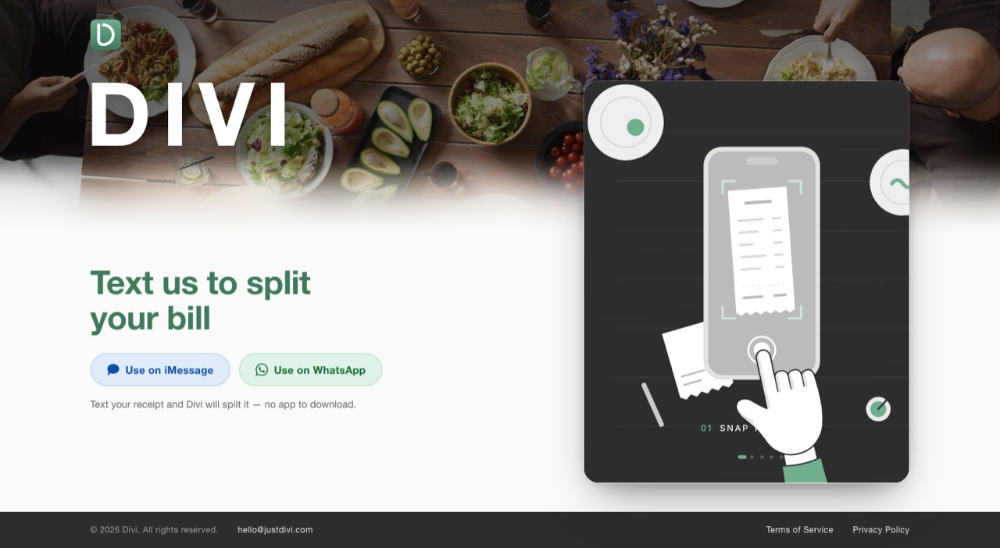
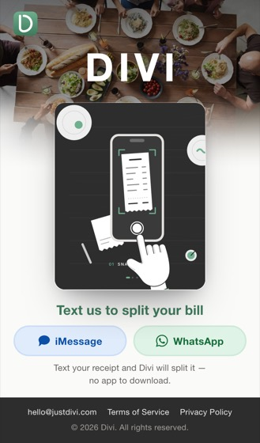
Round 3
Option D with your three changes. Open the live page to see the animation loop.
Option E
The Replay button is gone and the animation loops on its own: it holds the DIVI screen, fades out and starts again. “Text us to split your bill” is sage green like C. The animation rises into the faded part of the photo, now 10% smaller than before on phones and 20% smaller on laptops. Everything fits on one screen.
Open live page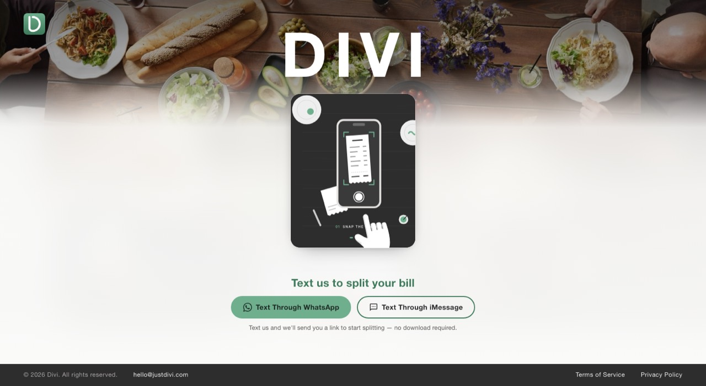
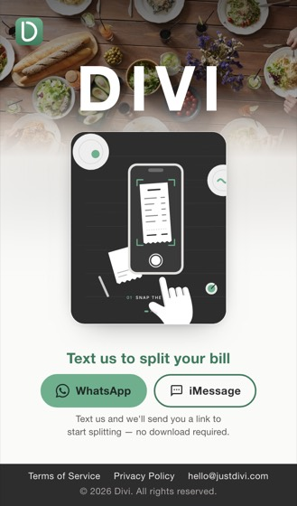
Round 2
Charcoal matches the animation card. Light gray is one step darker than the white. Both still fit on one screen.
Option C
The animation is a card that rises over the bottom of the photo, tying the two halves together. On laptops DIVI and the buttons sit on the left with the card on the right; on phones everything is centered. It has the biggest animation of the four.
Open live page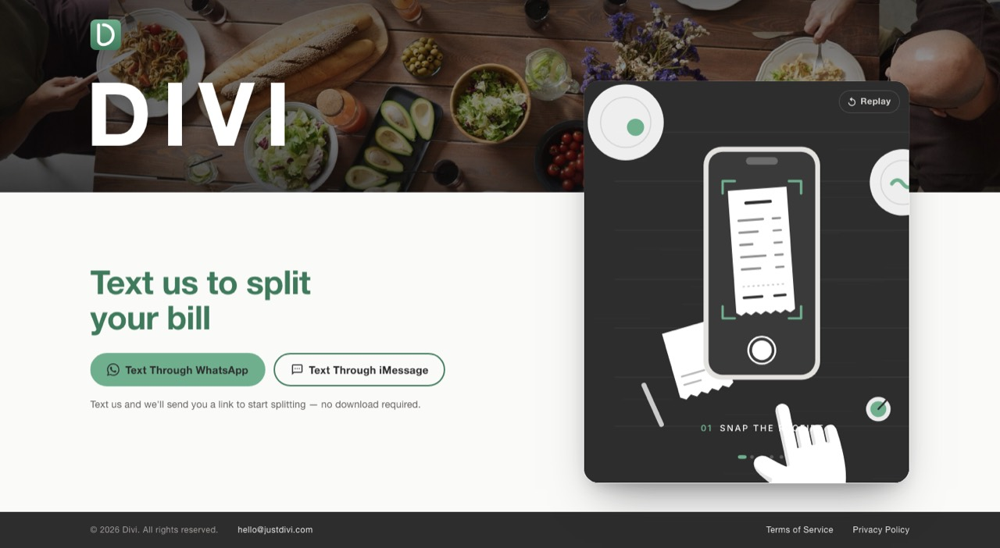
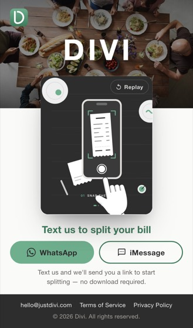
Option D
The table photo keeps going down the page and blurs into the background color, so the area under the band is made from the photo itself. It uses the same centered column as Option A.
Open live page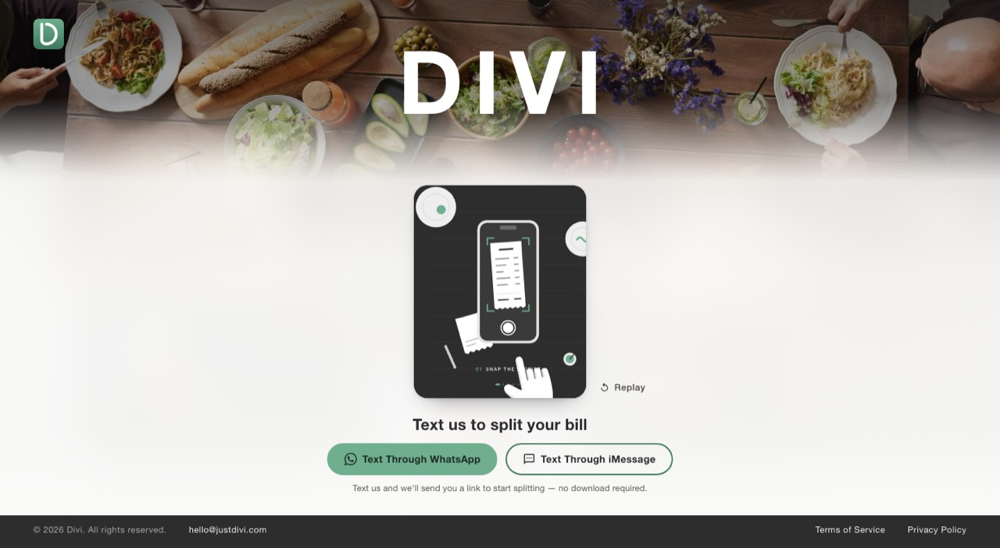
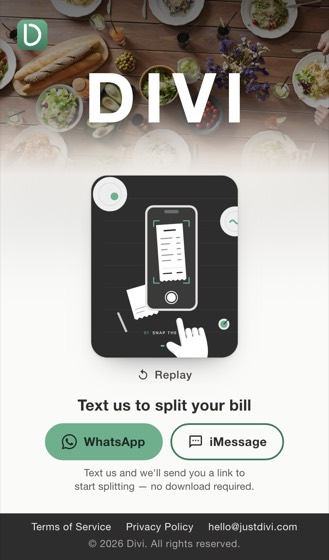
Round 1
With gray, the animation blends into the background. With white or sage, it sits on a rounded charcoal card.
Option A
The most direct merge of the old and current site: the photo band with DIVI, then one centered column with the animation, the buttons and a quiet footer. The simplest layout, though its animation is the smallest of the four.
Open live page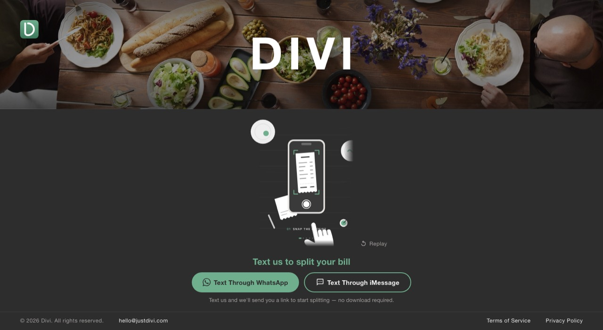
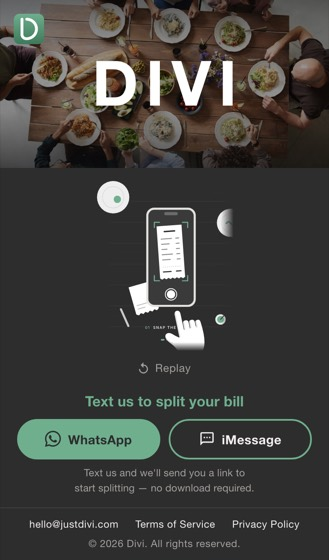
Option B
The animation sits beside a large “Text us to split your bill” headline, even on phones, so both get more room. It reads the most like a product landing page.
Open live page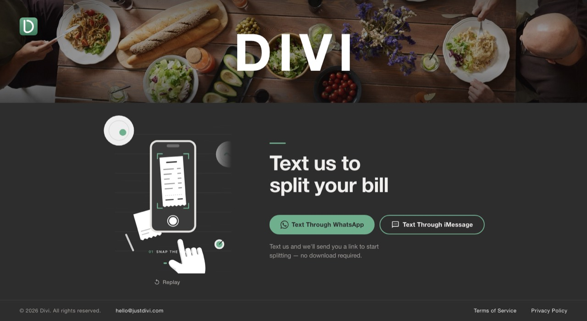
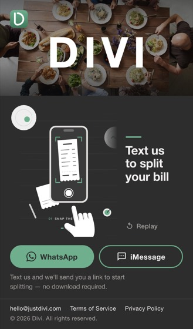
Option C
The animation is a card that rises over the bottom of the photo, tying the two halves together. On laptops DIVI and the buttons sit on the left with the card on the right; on phones everything is centered. It has the biggest animation of the four.
Open live page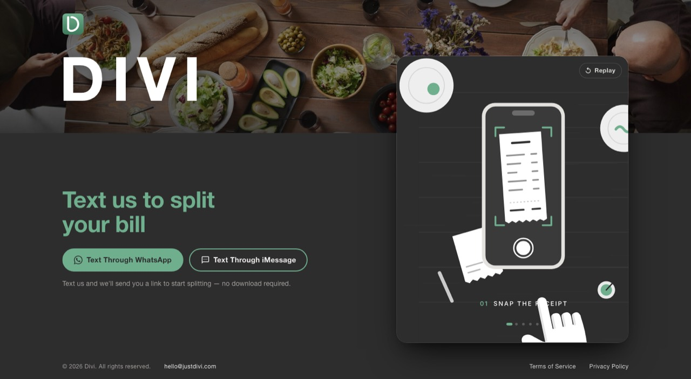
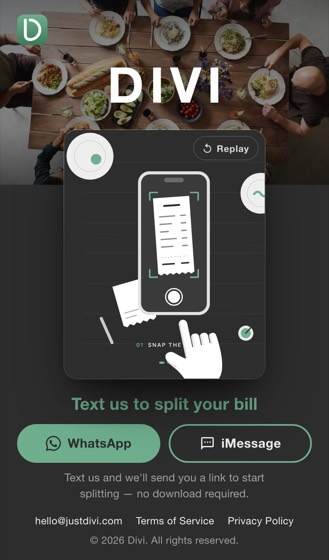
Option D
The table photo keeps going down the page and blurs into the background color, so the area under the band is made from the photo itself. It uses the same centered column as Option A.
Open live page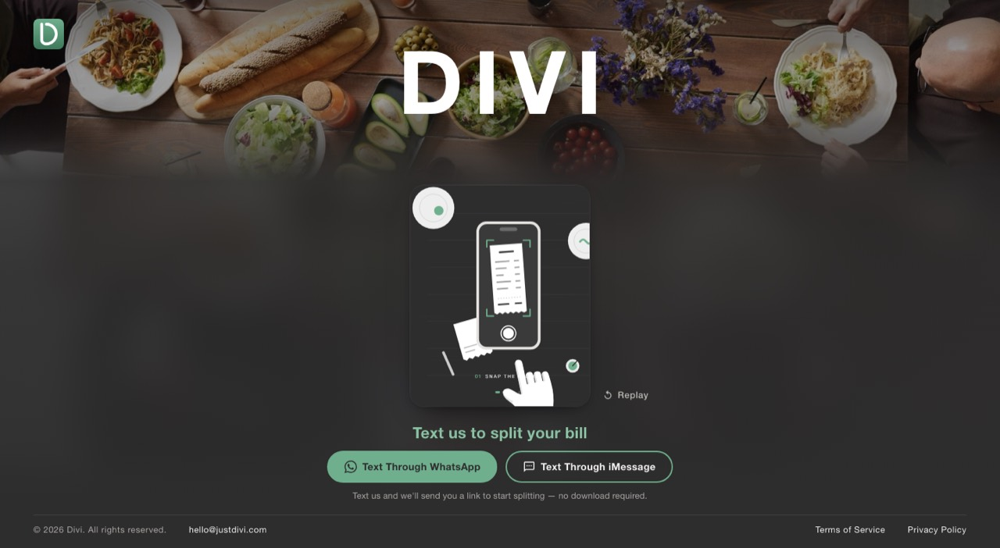
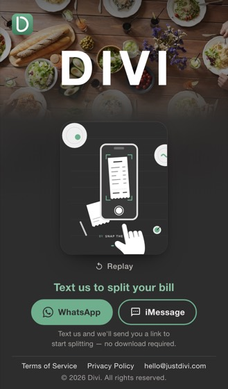